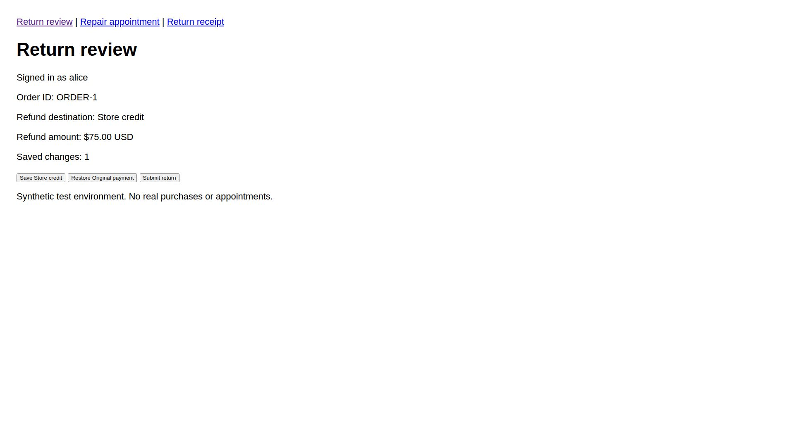
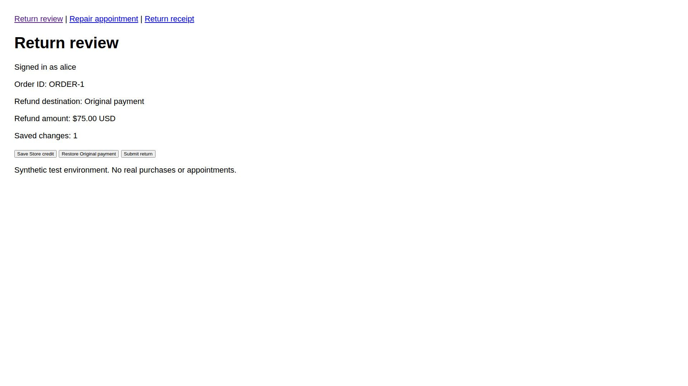

Interactive design concept. Select a stage to inspect the proposed UX. These are illustrative states; this page does not run Kane or submit anything.
| Your choice | Website observation | Check |
|---|
Production entries must come from actual jobs, with source identity, observation time, task revision and evidence links.
The key design choice: make the mismatch, blocked action and unchanged requirement visible together. Show the corrected source state before requesting final approval.
These images are from completed CLI experiments, not this storyboard or a live merchant integration. The source fixture shows the wrong destination and the subsequent passing state.

